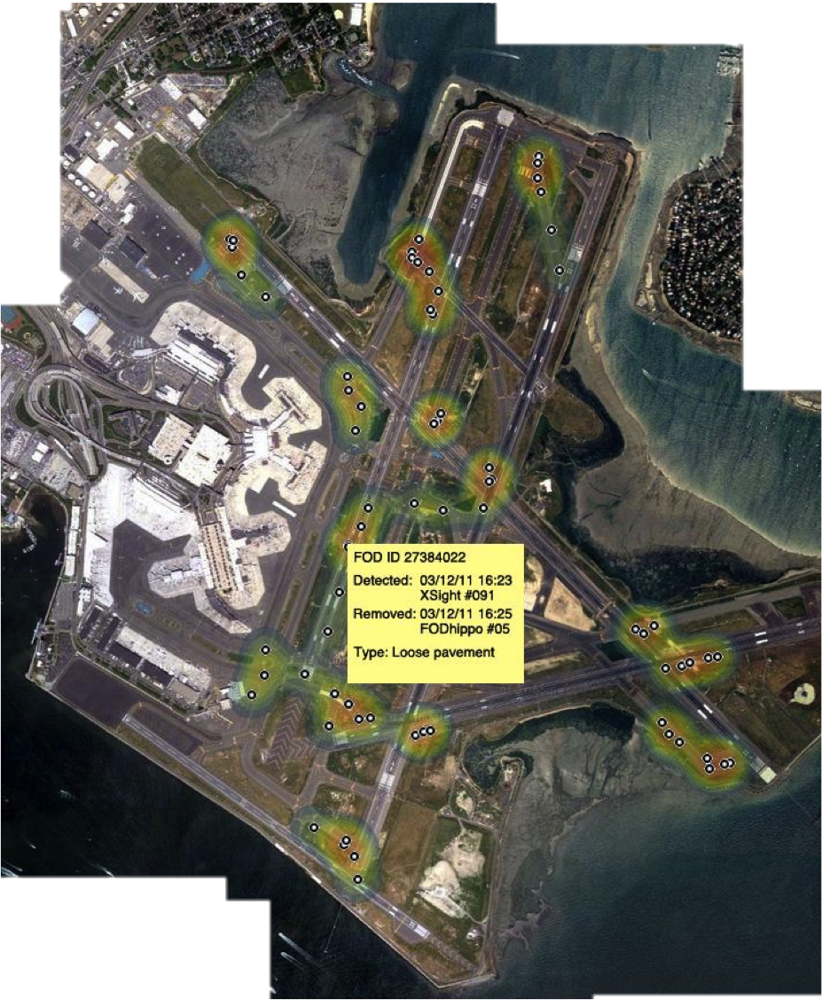

← Will Makes Things.

FODHippo
An Autonomous Debris Removal System for Airport RunwaysI worked with a team of three others to develop an automated foreign object debris (FOD) removal system for airport runways as an entry in the national FAA Design Competition for Universities (spoiler: we got second place). Our system integrates with current FOD detection systems and allows airport operators to increase the speed of their response to FOD related events.

We worked on the project over two semester: the first, in Fall 2011, as our senior design project and the second, in Spring 2012, as independent research. In the fall we focused on the development of the robot's hardware systems, specifically the locomotion and object retrieval sub-systems. The 15kg prototype uses a unique hungry hippo
style retrieval mechanism which you can see in this video...
During the second semester we focused on developing the control algorithms for implementing GPS waypoint navigation as well as overall system design: analyzing potential risks and envisioning how the system would be integrated into existing airport operations. Below is a FOD heatmap overlaid on Logan Airport.
For all of the gory details you can read the formal report we submitted to the competition.